发布时间:2018-11-08 中国科大少年班学院学生会
束缚or解放？辩论赛：论人工智能与人类
生院二队VS少院一队
随着科学技术的突进，曾经似乎遥不可及的人工智能已经融入我们的生活。人们相关的思虑也乘着大潮踏上了舞台：一方面，人工智能提供了巨大的便利，作为最前沿的技术，以庞大智能谱系的形式，应该认为它从生活、生产角度解放了人；另一方面，它又似乎是无处不在的幽灵，以看不见的手引导着我们走向无处之处，似乎是一种束缚。当问题摆上台面，当双方各持己见，究竟哪一方会占领高地，获得认可呢？
11月4日晚，东区地空楼，短兵相接。
正方：生院二队
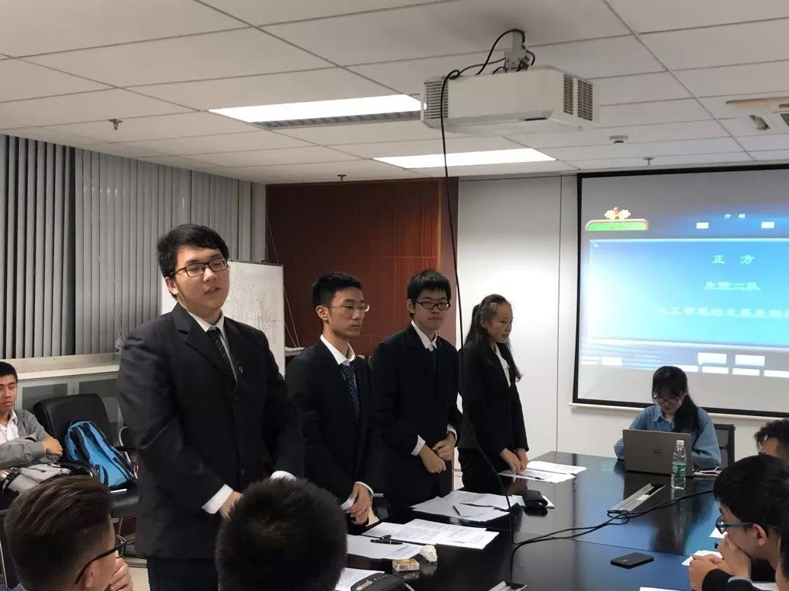
霸气而沉着
反方：少院一队
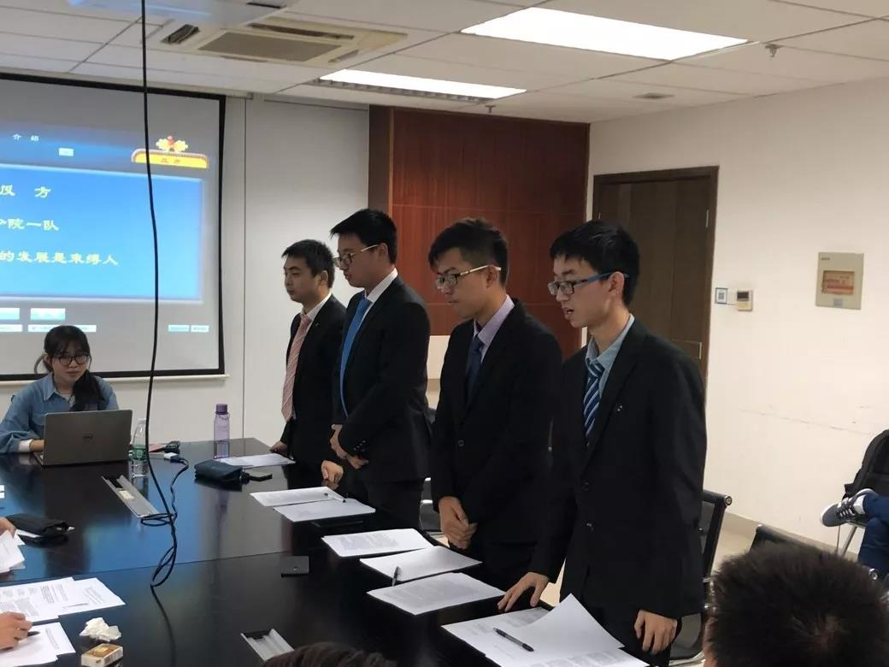
锋锐而内敛
开始
晚八点许，主席宣布了比赛的开始，双方开始划归自己的地盘.
正方生院二队站在人工智能的发展是解放人的一方。他们认为，解放是指选择面的拓宽，而人工智能能够为人类解决问题提供新的或效率更高的方案，自然是解放人的巨大助力。同时，人工智能算法的效率在很大程度上解放了人类社会的生产力，并在人类的思维领域给予新的可能，从物质与精神双方面拓宽了人类的选择面。
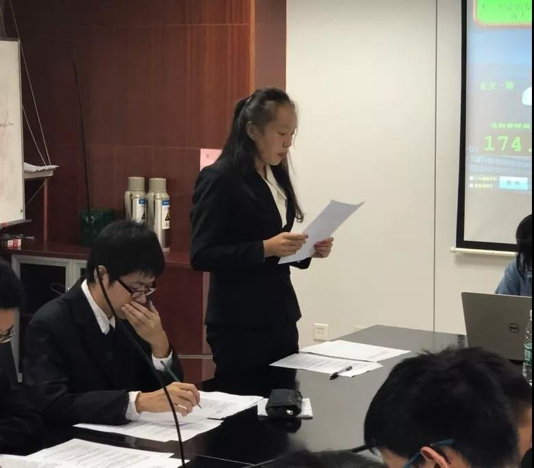

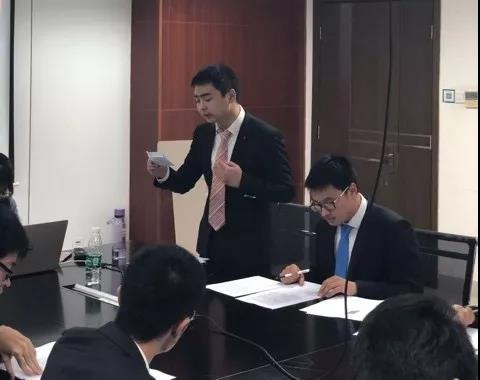
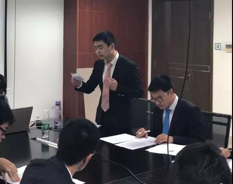
进入双方的质询、驳论、对辩环节，正方指出反方论证局限于思想而忽视了生产力的巨大释放，反方在抛出了不少耳熟能详的例子如被Google控制的选民予以反击。对辩之后，由赛前的安排，反方首先进行了奇袭申论，紧接着便是正方的奇袭质询。为接下来的盘问攻势打下了基础。
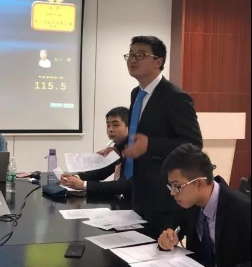
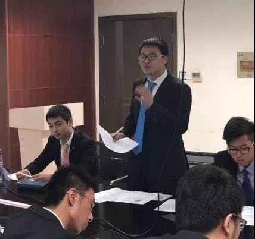
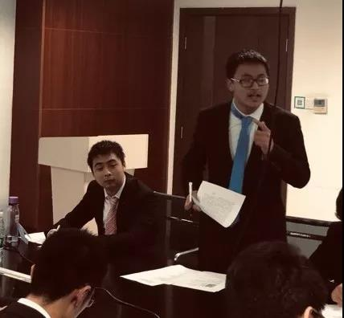
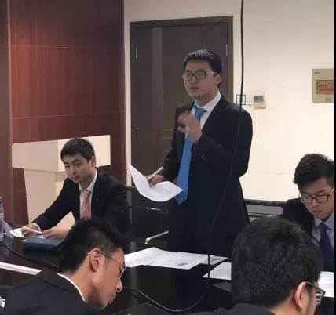
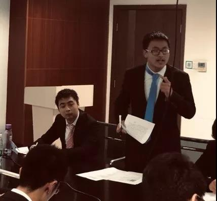
(忘我的小甜心三连)
&emsp接下来便是紧张刺激的自由辩环节。正方始终围绕解放的生产力以及创造的新成果，将大量的数据弹药抛向反方；然而反方也丝毫不惧，牢牢把握人类的强受暗示性以及人工智能的强被信任性，强调人工智能的黑箱特质，屡出奇兵。
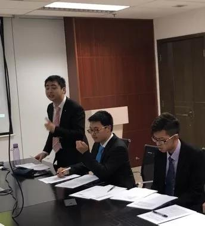
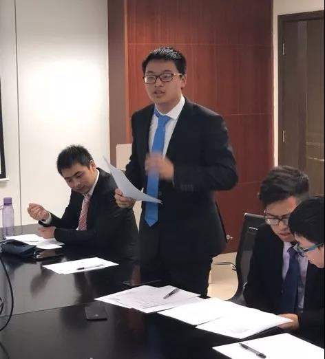
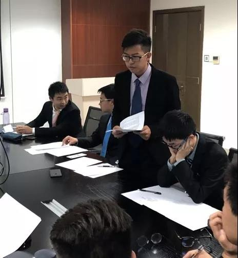
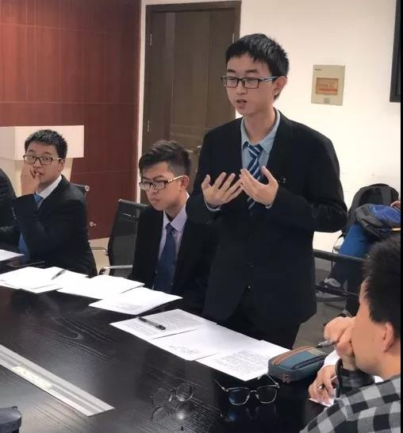
结辩环节，反方温文尔雅，稳中求进。正方则慷慨激昂，锋芒四射。
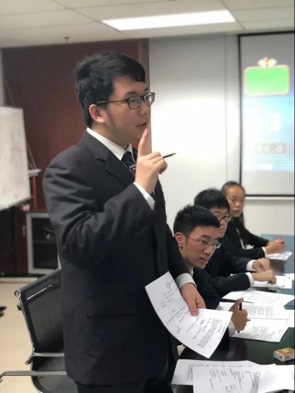
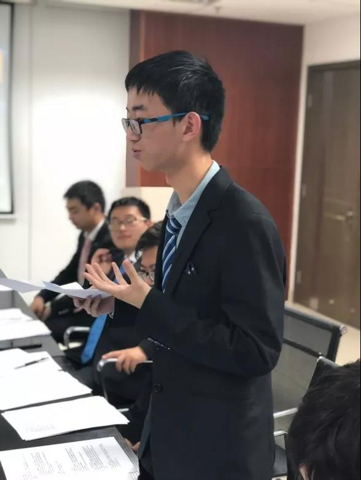
END
随着双方的发言结束，选手的舞台便让给了评委。
贴上超级超级帅的赵英程师兄。
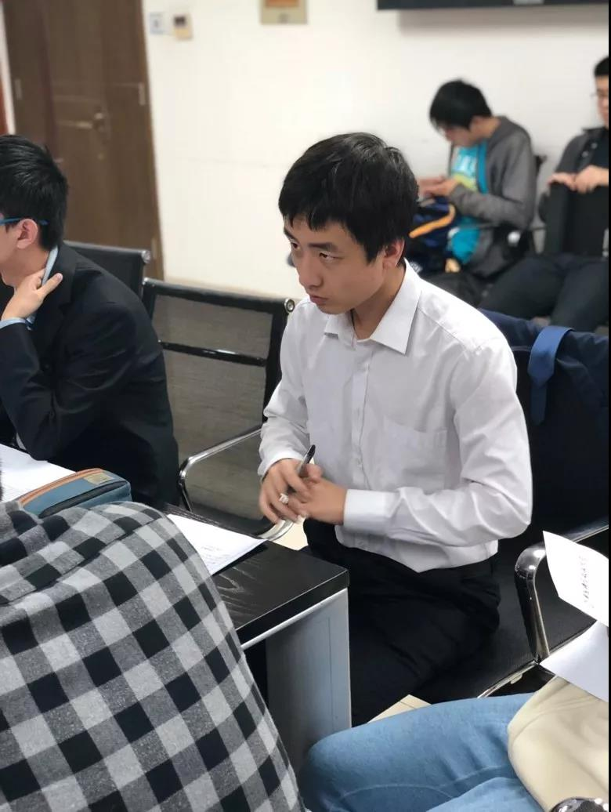
评委认为，正方持论中规中矩，抢夺了易达成共识的高地，在第一个论点打出了相对漂亮的效果，美中不足的是第二个论点却是缺乏说服力。而反方论点优质而精妙，思路也较有说服力，但论证过程中的论点贯彻有待加强，在论证的透彻程度、逻辑的严密性上也略有欠缺，最终惜败。但是我们知道，辩论的精髓不在于胜负，而在于辩题体现的现世价值，在人工智能以它的神奇力量扩展人类可能的同时，我们也要做到慎思明辨，让技术服务于人类。